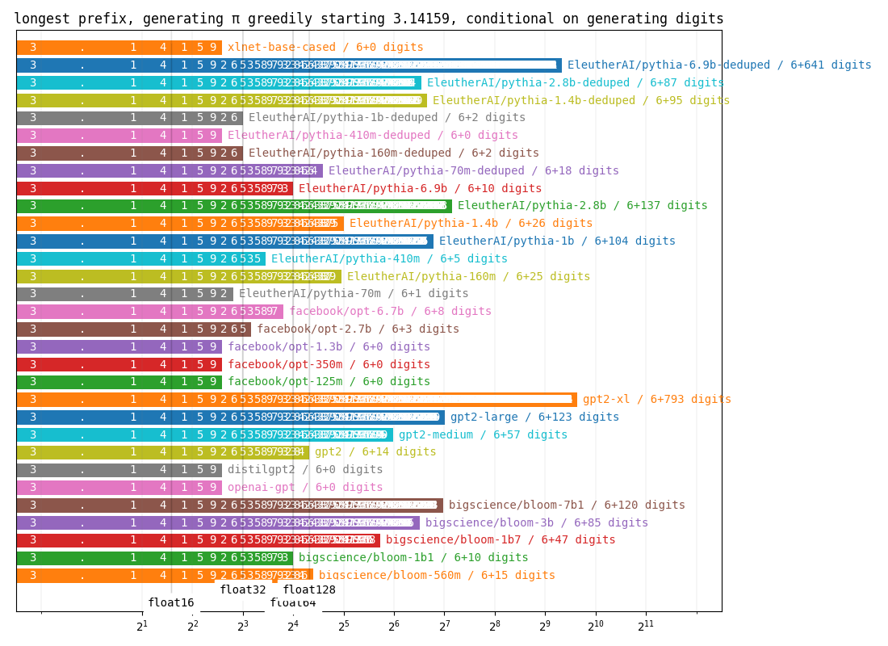
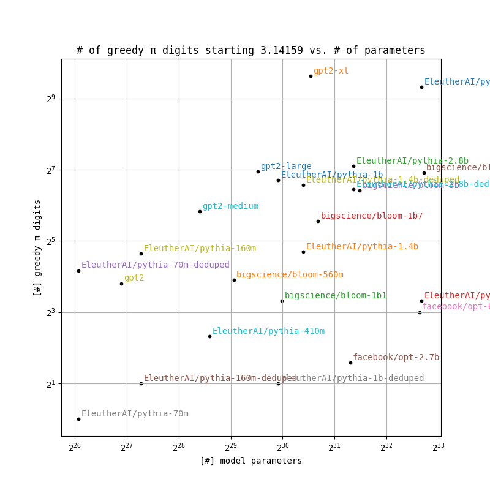
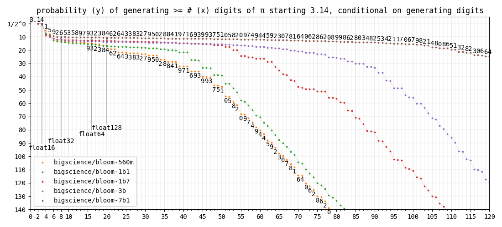

<< Piotr (Peter) Mardziel
how many digits of pi does gpt know?
- GPT and similar models take as input a piece of text and output a prediction of what comes
next. If they are given a the first part of pi, do they predict the next part? How big of a
piece of pi can they produce this way?
- Given the text "3.14159", the model gpt2-xl, correctly picks the next 793 digits of pi
before making a mistake. gpt1, on the other hand, makes a mistake right away giving us 0
additional digits. Results for other gpt variants and sizes of bloom are shown below
under greedy pi.
- Models vary in size. Their pi-generating capability is shown as a function of their size
in digits per parameter and enumerated in the
table stats. gpt2-xl is best with 546.7 digits of pi per G=2^30
parameters.
- All results are conditioned on models generating digits and not other
characters/words/tokens.
- If each model predicted digits according to their distributions instead of picking the most
probable digits, what would be the probability of generating at least n digits of pi? This is
shown in section pi probability.
- All models have some notion of pi until a point where pi probability degenerates at a fixed
exponential (a straight diagonal line in the graphs).
greedy pi

- Lines labeled float{16,32,64,128} indicate number of decimal digits needed to fully
define pi for storage in respective floating point formats.
digits per parameter

stats
| model |
# parameters (G=2^30) |
# of greedy pi digits beyond the starting 3.14159 |
digits per G params |
| bigscience/bloom-560m |
0.52 G |
15 |
28.8 |
| bigscience/bloom-1b1 |
0.99 G |
10 |
10.1 |
| bigscience/bloom-1b7 |
1.60 G |
47 |
29.3 |
| bigscience/bloom-3b |
2.80 G |
85 |
30.4 |
| bigscience/bloom-7b1 |
6.58 G |
120 |
18.2 |
| openai-gpt |
0.11 G |
0 |
0.0 |
| distilgpt2 |
0.08 G |
0 |
0.0 |
| gpt2 |
0.12 G |
14 |
120.8 |
| gpt2-medium |
0.33 G |
57 |
172.5 |
| gpt2-large |
0.72 G |
123 |
170.6 |
| gpt2-xl |
1.45 G |
793 |
546.7 |
| facebook/opt-125m |
0.12 G |
0 |
0.0 |
| facebook/opt-350m |
0.31 G |
0 |
0.0 |
| facebook/opt-1.3b |
1.23 G |
0 |
0.0 |
| facebook/opt-2.7b |
2.47 G |
3 |
1.2 |
| facebook/opt-6.7b |
6.20 G |
8 |
1.3 |
pi probability
all

gpt
bloom

gpt